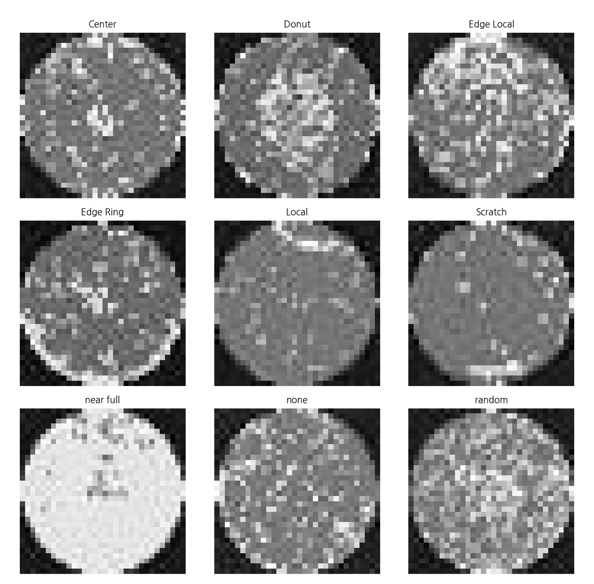
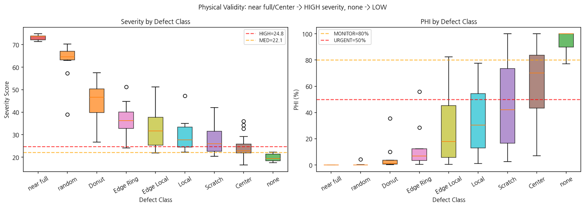
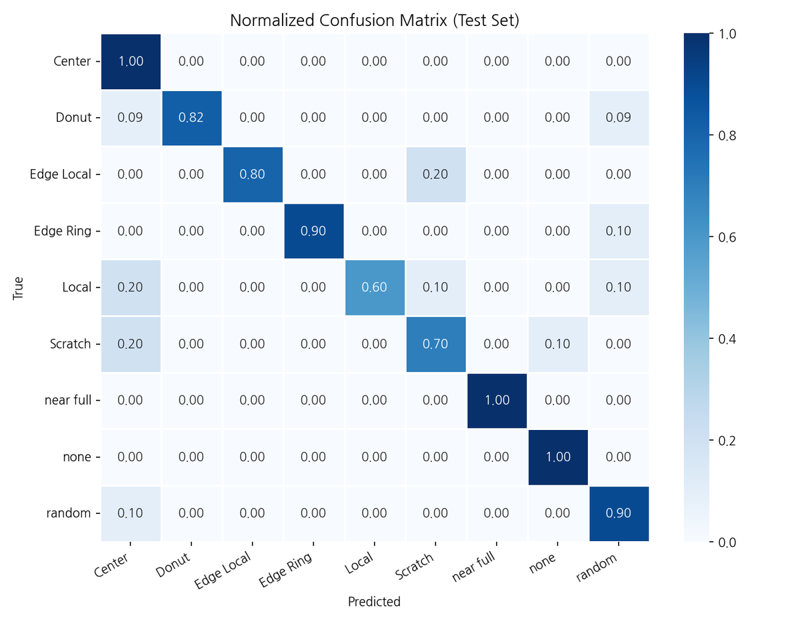

웨이퍼 결함 패턴 분류 및 PHI 기반 설비 점검 우선순위 도출 시스템
화공인공지능 수업에서 진행한 프로젝트. 기획을 도맡아 웨이퍼 맵 결함 패턴을 CNN으로 분류하고, 결함 심각도(Severity)와 Process 건전성 지수(PHI)를 결합해 설비 점검 우선순위를 자동 도출하는 시스템을 설계해, 분류 정확도 85.6%·Macro F1 85.8%를 달성했습니다.
개요
하루 수만 장 이상 생산되는 웨이퍼 맵을 육안으로 검사하는 것은 비효율적이고 병목을 유발합니다. 기존 연구는 단순 결함 분류(classification)에 그쳐 원인 Process 추정이나 점검 우선순위 판단으로 이어지지 못한다는 한계가 있었습니다. 이 프로젝트는 웨이퍼 맵 기반 불량 심각도 분석과 Process 점검 우선순위 도출까지 하나의 흐름으로 구현하는 AI 시스템을 목표로 했습니다.
문제 정의
- 미세 Process + 대량 생산 환경에서는 미세 결함도 전체 수율에 직결되지만, 결함 분류만으로는 "어떤 Process/설비를 먼저 점검해야 하는지" 판단할 수 없었음
- 화학공학적으로는 박막 Deposition·Etch·Diffusion·Clean 등 단위 Process와 결함 원인의 상관관계를 이해해야 하고, AI로는 대량 웨이퍼 맵에서 패턴을 자동 분류하고 이상 징후를 탐지해야 하는 두 축이 모두 필요했음
- 단일 분류 정확도만으로는 결함의 심각도(공간적 집중도, 위치 등)를 반영하지 못함
접근 방법
데이터 및 분류 모델
- WM-811K 데이터셋에서 897장 추출, 9개 클래스(정상 None 1개 + Edge-Local·Edge-Ring·Donut·Center·Local·Scratch·Random·Near-full 8개)로 구성
- 웨이퍼마다 다이 수·레이아웃이 달라 128×128로 정규화 후 EfficientNet-B0(ImageNet 사전학습)로 전이학습, 마지막 분류기만 9개 클래스로 교체
- Train/Val/Test = 80/10/10, Batch size 32, 총 30 epoch, AdamW + Cosine Annealing, Val macro F1 최댓값 저장 + patience=7 조기 종료

결함 심각도(Severity Score)
그레이스케일 임계화 → 결함 픽셀 추출 → DBSCAN 군집성 계산 → 4개 지표(R: 결함 비율, C: 공간 집중도, Pe: 가장자리 비율, Pc: 중심 비율) 산출 → AHP(Analytic Hierarchy Process) 가중합으로 0~100점 심각도 점수화했습니다.
| 지표 | R (결함비율) | C (공간집중도) | Pe (가장자리) | Pc (중심) |
|---|---|---|---|---|
| AHP 가중치 | 0.263 | 0.455 | 0.141 | 0.141 |
Severity = (w1·R + w2·C + w3·Pe + w4·Pc) / (w1+w2+w3+w4) × 100 으로 0~100점 정규화. 등급: μ+0.5σ 이상 MEDIUM, μ+1.5σ 이상 HIGH (CR < 0.1)
공간집중도(C)에 가장 큰 가중치를 둔 것은, 특정 영역에 결함이 무작위가 아니라 비무작위로 군집될수록 systematic defect·설비 이상을 더 직접적으로 시사하기 때문입니다.
Process 건전성 지수(PHI)와 설비 점검 권고
- PHI 정의: E = 정상군 평균 대비 초과 심각도 (정상 조건에서는 E≈0 → PHI≈100%)
- SPC 고정 보정: HIGH 경계(μ+1.5σ)에서 PHI=50%가 되도록 보정 계수 α 고정 → MEDIUM 경계(μ+0.5σ)에서는 PHI≈79%로 MONITOR 임계값(80%)과 정합
- 등급 체계: NORMAL(PHI≥80%, 조치 불필요) / MONITOR(50~80%, 예방정비) / URGENT(<50%, 즉각 점검)
- 결함 패턴별 우선 점검 Process·설비 후보군을 EQUIPMENT_DB로 매핑하되, 단일 원인 확정이 아닌 decision-support 방식으로 제한
결과
내부 테스트셋(90장) 기준 클래스별 분류 성능:
| 클래스 | F1-score |
|---|---|
| Near full | 1.00 |
| Edge Ring | 0.95 |
| None | 0.95 |
| Donut | 0.90 |
| Edge local | 0.89 |
| Random | 0.82 |
| Center | 0.77 |
| Local | 0.75 |
| Scratch | 0.70 |
Scratch(0.70)·Local(0.75)이 상대적으로 낮았고, Edge-Ring↔Edge-Loc, Scratch↔Local 간 혼동이 관찰되었습니다 — 시각적으로 유사한 국소·선형 결함 패턴이기 때문입니다.
클래스별 설비 점검 권고 분포 및 평균 PHI:
| 클래스 | URGENT | MONITOR | NORMAL | 평균 PHI |
|---|---|---|---|---|
| Near full | 10 | 0 | 0 | 0.0% |
| Random | 10 | 0 | 0 | 2.4% |
| Donut | 11 | 0 | 0 | 6.2% |
| Edge Ring | 9 | 1 | 0 | 12.8% |
| Edge Local | 9 | 0 | 1 | 26.3% |
| Local | 7 | 3 | 0 | 33.7% |
| Scratch | 2 | 6 | 2 | 62.6% |
| Center | 2 | 3 | 5 | 71.5% |
| None | 0 | 1 | 8 | 95.0% |
| Total (90장) | 60 (66.7%) | 14 (15.6%) | 16 (17.8%) | 34.5% |
평균 PHI는 Near full(0%)에서 None(95%)까지 물리적 심각도 순서와 일관되게 나타났습니다. AHP 가중치를 ±20% 무작위로 섭동시켜 검증(60장 표본)한 결과 평균 Spearman ρ = 0.9995 (최소 0.9983)로, 가중치 오차에도 점검 우선순위가 거의 변동하지 않아 프레임워크의 구조적 안정성을 확인했습니다.


한계 및 향후 계획
- 지도학습 기반이라 학습 데이터에 없는 새로운·복합 패턴은 판단하기 어려워, 보조 지표로 해석할 필요가 있음
- WM-811K는 명확한 단일 패턴 중심 공개 데이터라 애매한 패턴·복합 결함이 적어 Scratch·Local의 F1이 상대적으로 낮았음 — 향후 data augmentation과 실제 fab 데이터 검증 필요
- 웨이퍼 맵만으로는 Process history·장비 로그·레시피·metrology 데이터를 통합하지 못해, 단일 원인 확정이 아닌 decision-support 방식으로 제한됨
- AHP 가중치는 문헌 기반의 합리적 가정이며 실측 최적값은 아니고, PHI는 절대 수율을 예측하지 못함 — 향후 실측 yield·장비 이력으로 재학습 필요
- 향후 계획: 비지도/준지도 확장(클러스터링, one-class, autoencoder)으로 라벨 밖 새로운 패턴 탐지, multi-label 모델로 복합 패턴 대응, 장비 로그·레시피·lot 이력 통합, 실제 fab 데이터 기반 가중치 재추정